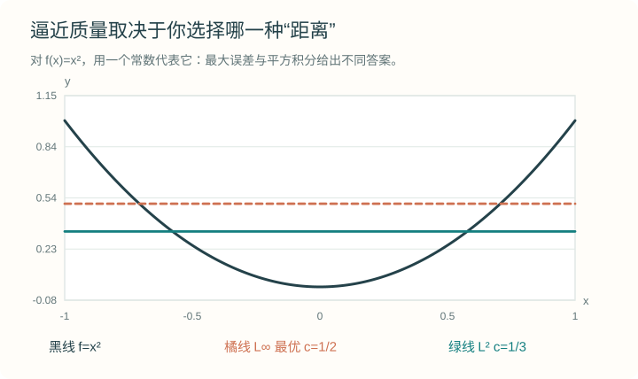
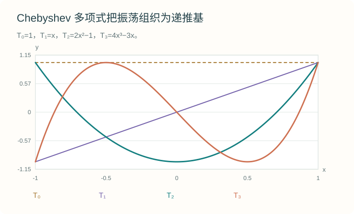

CHAPTER 07 · NUMERICAL ANALYSIS
函数逼近：范数、正交基与 Chebyshev 多项式
最好的逼近并没有唯一的日常含义。用同一函数的两种最佳常数、Chebyshev 正交权与极小最大性质建立准确的函数逼近框架。
01 · 拟合得“最好”，到底是在最小化什么？
若只能用一个常数表示函数 f(x)=x²（区间为 [-1,1]），你会选 c=1/2 还是 c=1/3？两者都可以是“最佳”，但它们最小化的是不同的误差度量。
如果标准是最坏点误差，则必须让离 0 和 1 最远的误差平衡，最佳常数是 1/2；如果标准是整个区间的平方误差积分，最佳常数是函数平均值 1/3。因此，逼近之前必须选择范数，而不能只说“误差尽可能小”。

02 · 函数空间与两种基本范数
令 Vₙ 为次数不超过 n 的多项式空间。最佳一致逼近关心整个区间上最大绝对偏差；最佳平方逼近关心积分意义下的平方误差。两者都属于在固定有限维子空间内找最接近目标函数的问题，但几何结构不同。
对于连续函数，一致范数定义良好；对于带正的可积权函数，可以讨论加权平方积分。在 L² 中“函数相等”按几乎处处相等理解，这是与逐点一致逼近不同的细节。有限维多项式空间在适用范数下有最佳逼近解；在 Hilbert 空间中投影唯一，在连续函数空间的多项式一致逼近中也有特殊的唯一性定理。不能据此推广成“任意范数和任意逼近集合必唯一”。
03 · 用正交基替代易耦合的幂基
幂基 1,x,x²,… 直观却可能在高次数时出现严重数值病态。正交多项式通过相应的带权内积减少系数耦合。在标准区间 [-1,1]，Legendre 多项式使用权函数 w(x)=1；第一类 Chebyshev 多项式使用 w(x)=1/√(1−x²)。
04 · Chebyshev 多项式的递推和极小最大性质
第一类 Chebyshev 多项式在区间内满足 Tₙ(x)=cos(n arccos x)。从 T₀=1、T₁=x 开始，用三项递推 Tₙ₊₁=2xTₙ−Tₙ₋₁，可以避免直接展开高次幂。

一个重要而容易被误解的结论是：缩放后的 Chebyshev 多项式在所有首项系数固定为 1 的 n 次多项式中，具有最小的最大绝对值。这与“对任意函数截取 Chebyshev 级数就一定是严格最优一致逼近”并不等价。最佳一致逼近的等振荡定理对误差函数有更严格的条件。
05 · 一个旧示例的陷阱：端点权函数发散
若计算 Chebyshev 正交性时直接在 np.linspace(-1,1,N) 的所有点上取 1/√(1−x²)，在首尾节点会遇到除零，得到无穷大和无效积分。数学上的权函数在端点虽然发散，但积分仍然收敛——错误来自把奇异端点当成普通采样点。
使用代换 x=cos θ 可将加权内积写为 θ∈[0,π] 上的普通三角积分。这样不需要直接计算端点无穷大权重：
import math
N = 4096
def cheb_inner(m,n):
step=math.pi/N
return step*sum(
math.cos(m*(k+.5)*step)*math.cos(n*(k+.5)*step)
for k in range(N)
)
assert abs(cheb_inner(2,3))<1e-12
assert abs(cheb_inner(2,2)-math.pi/2)<1e-12
print(cheb_inner(2,3),cheb_inner(2,2))原始资料与延伸阅读
公式与适用条件依据这些参考文献核对；图解与教学算例均为本仓库独立构造，不直接复用文献图片。
- NIST DLMF §3.11 · Approximation Techniques：一致逼近、Chebyshev 展开和数值求值方法。
- NIST DLMF §18.3 · Orthogonal Polynomials：Legendre / Chebyshev 权函数、正交性及多项式族定义。
- NumPy · Chebyshev Series：Chebyshev 级数拟合、求值与相关工具。